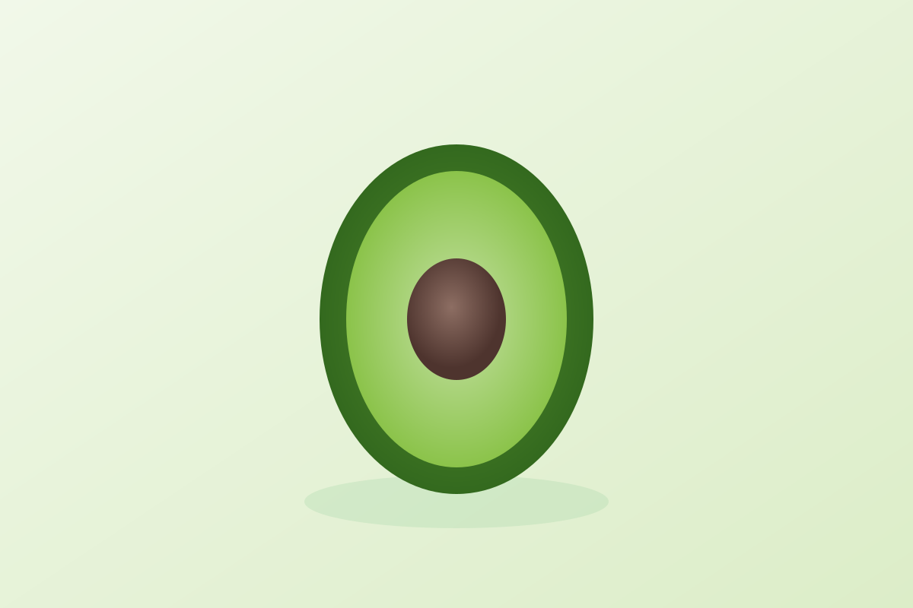

Avocado
Quick answer
Avocado fits well into an anti-inflammatory food pattern because it is an easy whole food that adds healthy fats and meal structure in a very repeatable way.
What it is
Avocado is a creamy fruit commonly used in savory meals, bowls, salads, and toast-based breakfasts or lunches.
Why avocado may support an anti-inflammatory diet
Avocado helps build meals that are satisfying and simple. It adds healthy fat and fits naturally into vegetable-forward eating.
Key nutrients and compounds
- Fiber
- Monounsaturated fat
- Potassium
- Vitamin E
Potential health benefits
- Supports meal-building with healthy fats
- Pairs well with vegetables and grains
- Works in simple lunch and breakfast patterns
How to eat avocado
- Add avocado to bowls and salads
- Use it on toast with simple toppings
- Pair it with vegetables and grains
Shopping and storage
Choose avocados based on when you plan to eat them. Let firmer fruit ripen, then refrigerate if needed.
FAQ
Is avocado anti-inflammatory?
It is commonly included in anti-inflammatory eating patterns because it is an easy, practical whole food that adds healthy fats to meals.
Evidence note
Avocado is described here as a supportive food within a broader eating pattern, not as a treatment by itself.
The strongest factual framing on this page is limited to established nutrition context such as monounsaturated fat, fiber, potassium, and practical meal use. The page does not claim that eating avocado guarantees a specific health outcome.